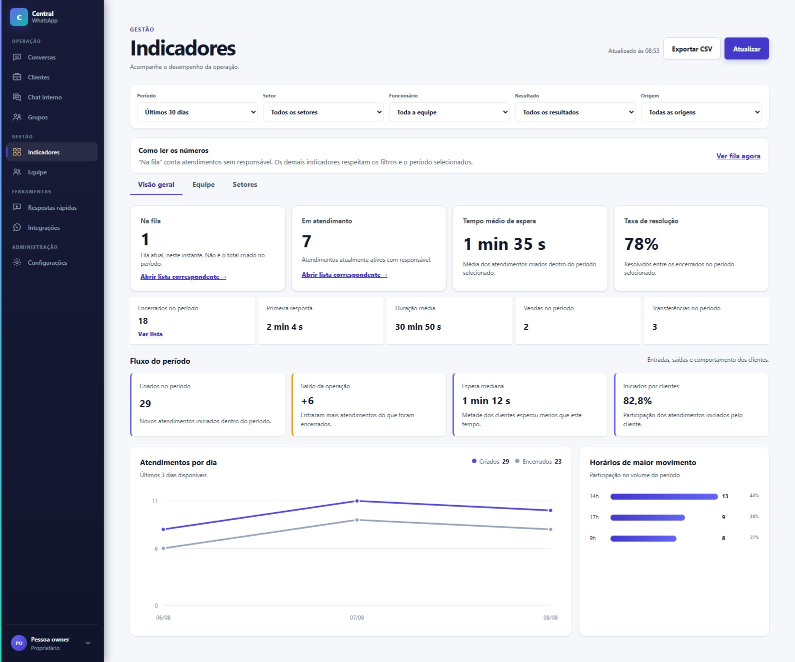
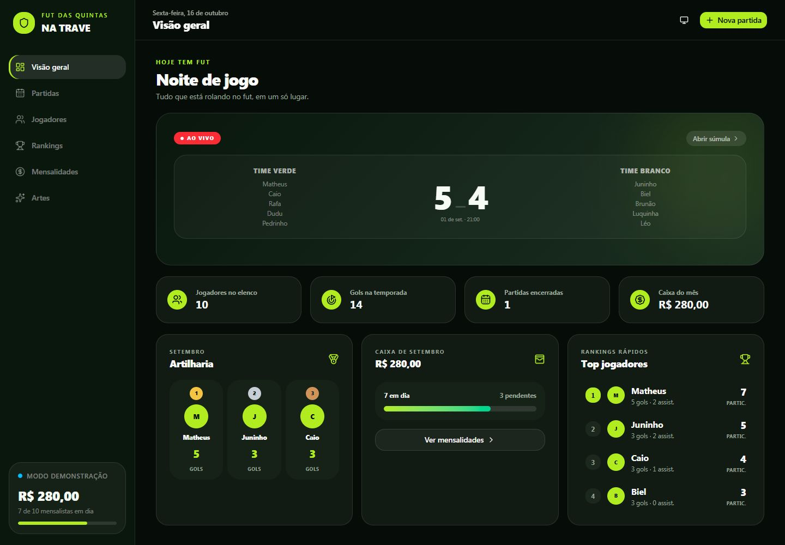
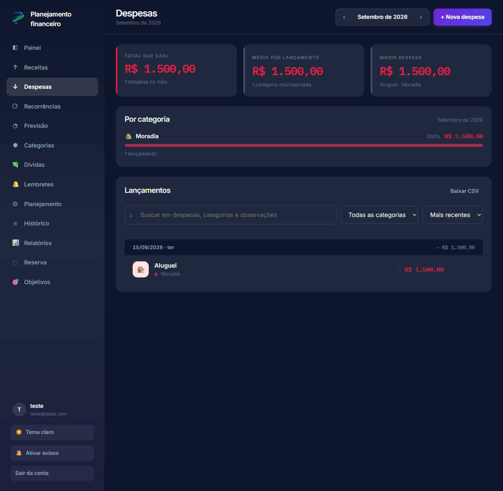
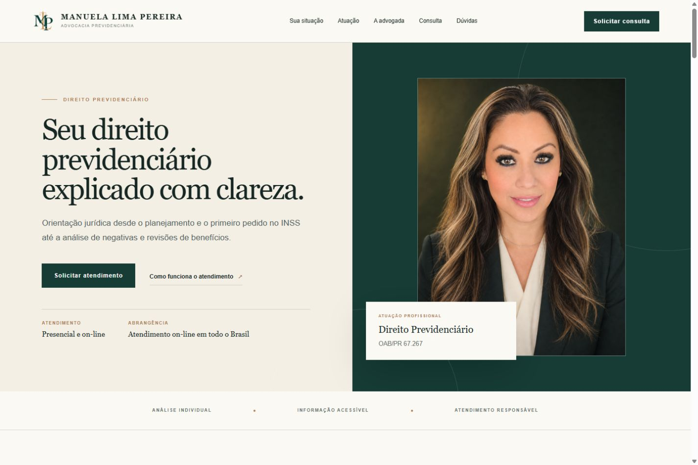
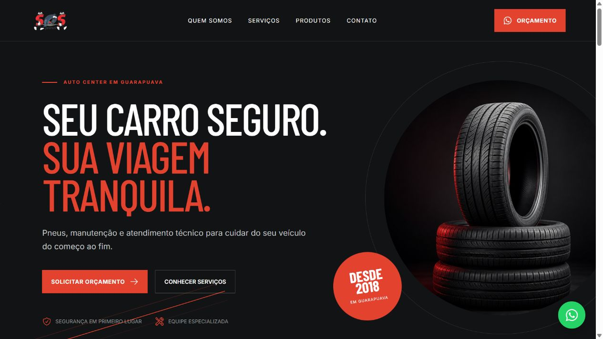
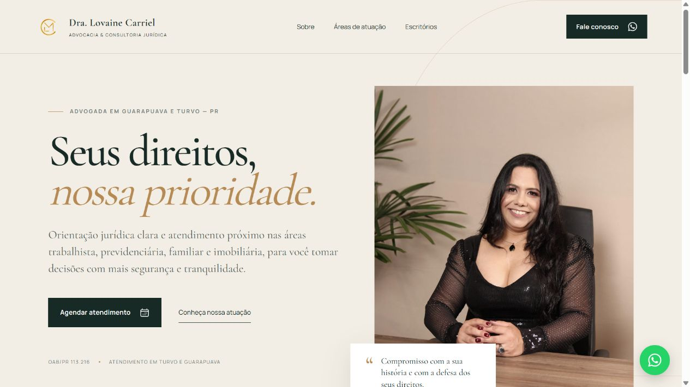
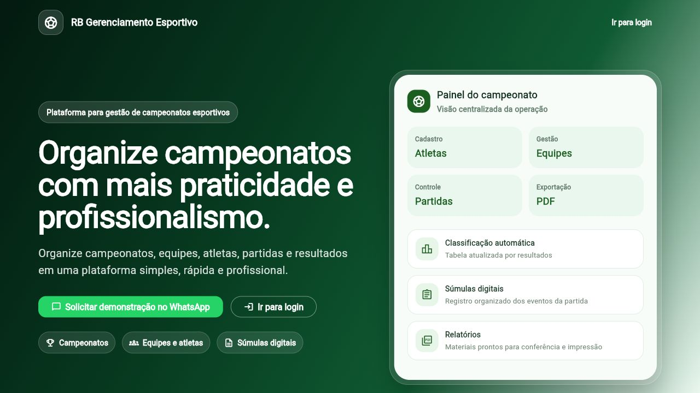
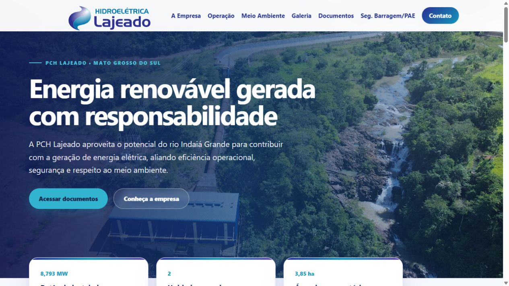

Ambiente de teste, sem conversas reais de clientes.
Rafael Carriel / Desenvolvimento digital
Do site da sua empresa ao sistema que organiza sua operação.

Ambiente de teste, sem conversas reais de clientes.

Telas do projeto com dados de demonstração.

Telas do projeto com conta e lançamentos de teste.
Central de automação com tarefas, agentes, fila de execução e revisão de mensagens para o fluxo comercial.

Conteúdo previdenciário acessível, navegação por situação e formulário que organiza a solicitação de consulta.

Uma vitrine para serviços automotivos, com catálogo e caminho direto para o orçamento.

Identidade, áreas de atuação e atendimento em uma experiência que transmite confiança.

Campeonatos, inscrições, resultados e classificações conectados em uma única operação.

Informação institucional acessível para aproximar a empresa, parceiros e comunidade.
Um site com a identidade da sua empresa, conteúdo organizado e caminhos claros para quem quer conhecer ou contratar seu trabalho.
Uma página dedicada a um serviço, lançamento ou campanha. A informação certa para ajudar o visitante a dar o próximo passo.
Ferramentas desenvolvidas em torno do seu processo para organizar informações, conectar tarefas e acompanhar o que importa.
04 / Etapas do trabalho
Etapas claras, decisões explicadas
e contato direto durante o projeto.
Entendo seu negócio, seu público e o que você quer melhorar. Definimos prioridades e escopo.
Organizo conteúdo e funcionalidades. O visual nasce da sua identidade e dos objetivos do projeto.
Desenvolvo a solução e reviso navegação, conteúdo e adaptação para diferentes telas.
Colocamos o projeto no ar. Suporte, manutenção e novas etapas podem ser combinados à parte.
05 / Rafael Carriel
Sou Rafael Carriel e desenvolvo sites, sistemas web e automações. Trabalho com páginas institucionais e aplicações de atendimento, gestão e controle financeiro.
No início, conversamos sobre o que você precisa, quais recursos fazem sentido e o que cabe no escopo. A proposta define as etapas e o que será entregue.
Dúvidas
Sim. O projeto parte da sua marca, do seu público e do que o site precisa fazer. Conteúdo, estrutura e visual são definidos para o seu contexto, com escopo combinado antes do desenvolvimento.
A adaptação para celular faz parte do desenvolvimento: textos legíveis, navegação simples, botões acessíveis e conteúdo que se reorganiza conforme a tela.
Depende das páginas, funcionalidades e conteúdo necessário. Depois da conversa inicial, você recebe uma proposta com escopo, investimento e prazo definidos para o seu projeto.
Não. Podemos começar pela sua ideia e pelo que já existe. Na conversa inicial, organizamos objetivos, referências e quais materiais serão necessários.
Sim. Hospedagem, suporte, alterações e evolução podem ser contratados conforme a necessidade. As entregas e condições são combinadas na proposta.
Contato
Me conte o que você precisa desenvolver ou melhorar.
Podemos começar por uma conversa sobre o escopo.
PREFERE ESCREVER COM MAIS DETALHES?
rafaelcarriel.deo@gmail.com ↗01 Qual é o seu negócio?
02 O que você gostaria de melhorar?
03 Tem alguma ideia ou referência?